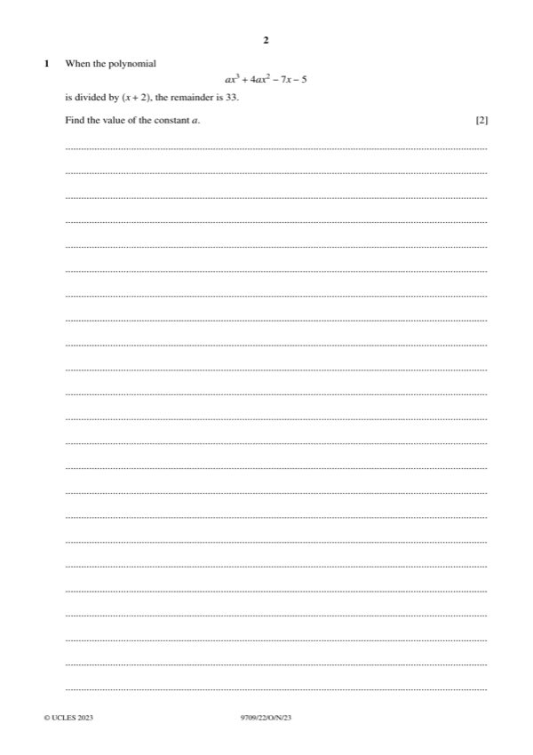

Question 1

Original paper page 2
Part 1 — solution
- [M1] OE (long or synthetic division)
- [M1] Obtain/use: Allow one sign error for
- [A1] Obtain/use: Obtain −8a + 16a + 14 − 5 = 33 and hence a = 3
Mark points
- [M1] OE (long or synthetic division)
- [M1] Obtain/use: Allow one sign error for
- [A1] Obtain/use: Obtain −8a + 16a + 14 − 5 = 33 and hence a = 3
Part 1 — solution
- [A1] Obtain/use: Obtain cos cos60 + sin sin60 = 4cos
- [M1] May still involve cos60 and sin 60
Mark points
- [A1] Obtain/use: Obtain cos cos60 + sin sin60 = 4cos
- [M1] May still involve cos60 and sin 60